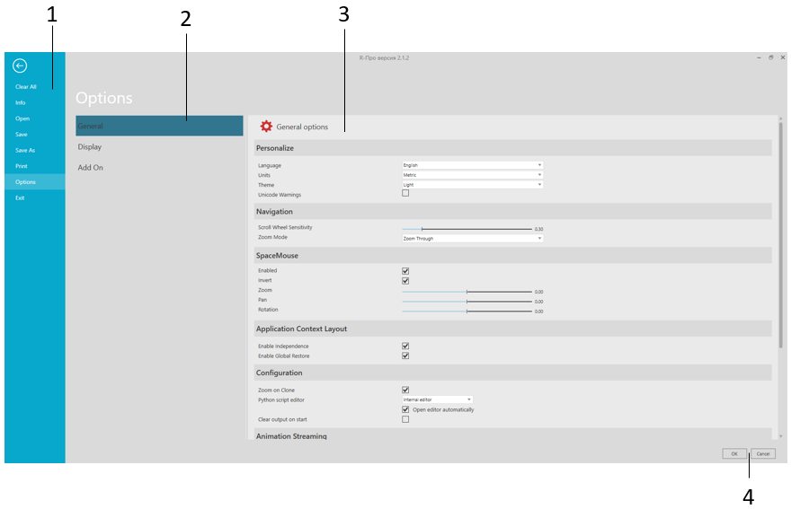

The Backstage view allows you to open and save files as well as edit preferences.

| 1. | Navigation Pane |
| 2. | Sections |
| 3. | Screen |
| 4. | Confirm Options |
To access the Backstage view:
The context of the Backstage view depends on the item you select in the Navigation pane.
You can:
The following commands are shown in the Navigation pane when you click the File tab.
| Name | Description |
| Clear All | Clears the 3D world of all components and opened layouts. |
| Exit | Closes R-Pro 2.1. |
| Info | Shows product and license information as well as the metadata of the current layout in 3D world. |
| Open | Opens a native or supported type of file as a layout in the 3D world. |
| Options | Displays a set of options/preferences for configuring R-Pro 2.1. |
| Previews and prints either the view of the 3D world or a selected area of the drawing world. | |
| Save | Saves changes made to the current layout in 3D world to an existing file. |
| Save As | Saves the current layout in the 3D world as a new file. |
With the Limit backups enabled, the files that should be deleted are determined by modification date. With Delete old backups option enabled, backup files are deleted on application startup. The folder that is cleaned up is either the selected backup folder or the My Models folder if no backup folder is selected.
Note: